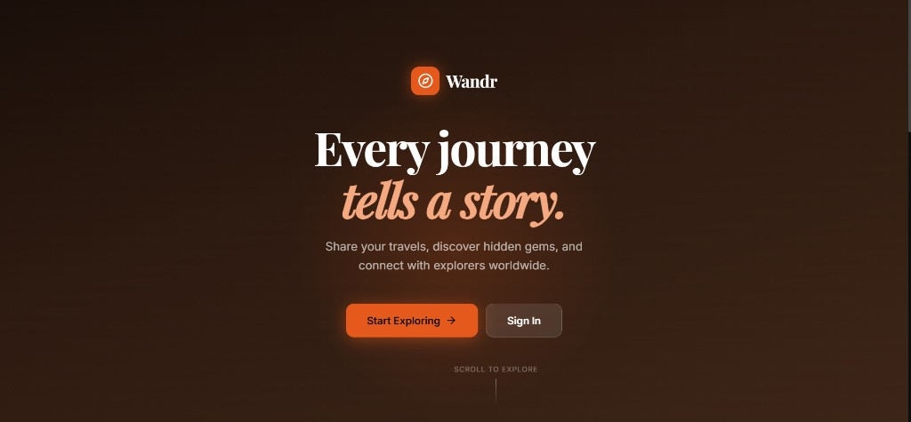

Wandr — Travel Experience Platform
A distributed travel platform decomposed into independent microservices (User, Content, Location, Notification) orchestrated via Docker Compose and connected to MongoDB and a React client.

Overview
Wandr was built as the capstone project for the Advanced Programming course. Rather than building a conventional monolithic CRUD application, the goal was to model, containerize, and deploy a distributed microservices system with distinct service responsibilities, separate process lifecycles, and documented fault-tolerance plans.
The Engineering Problem
Monolithic architectures can become tightly coupled and difficult to scale when distinct features (such as real-time notifications or geographic location lookups) have fundamentally different scaling profiles and data requirements than core user authentication and content publishing.
Microservices Architecture
The system is containerized with Docker Compose across four decoupled backend services:
- User Service: Handles user registration, credentials hashing, JWT token generation, and account profile lifecycle.
- Content Service: Manages travel story authoring, photo attachments, captions, comment threads, and social likes.
- Location Service: Manages geographic metadata, location search indexing, and destination tagging for travel posts.
- Notification Service: Dispatches real-time alerts for user interactions (likes, comments, new stories) across connected clients.
My Role & Contributions
Full Stack Engineer: microservices decomposition, Docker Compose service orchestration, Express REST API development, MongoDB integration, React client views, and authoring comprehensive deployment hardening and failure mode analyses.
Key Challenges & Trade-offs
- Service Boundary Definitions: Designing clean boundaries between Content and Location without introducing circular dependencies or excessive network round-trips.
- Multi-Container Orchestration: Configuring Docker Compose networks, volume mounts, and service start order dependencies for deterministic local and production reproduction.
- Resilience & Failure Modes: Producing a formal Failure Mode Analysis documenting graceful degradation when downstream services (e.g., Notification or Location) experience latency or outages.
Results
A working, containerized microservices platform demonstrating distributed system patterns, Docker container orchestration, and thorough engineering documentation.